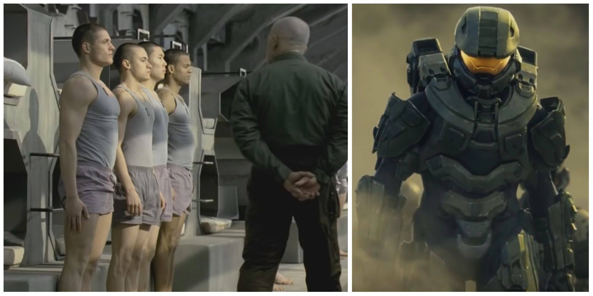
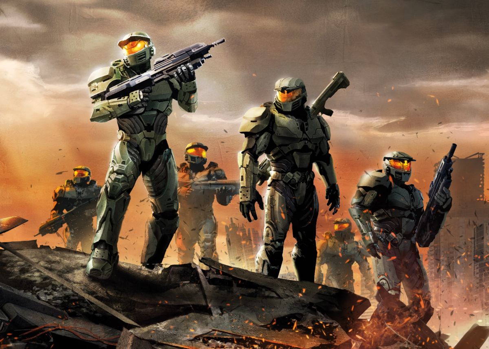
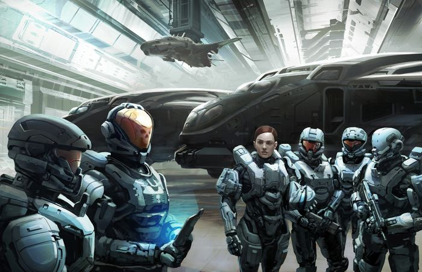
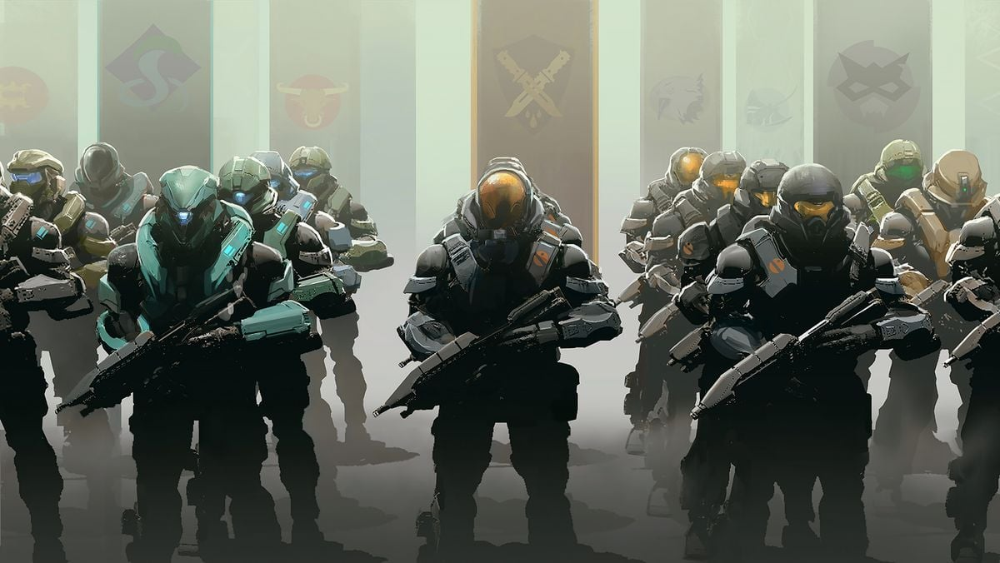

Los Spartans - La Élite de Halo
Orígenes de los Spartans
Los Spartans son soldados de élite mejorados genéticamente y equipados con armadura de alta tecnología, creados por la Oficina de Inteligencia Naval (ONI) para enfrentar amenazas a la seguridad humana. El programa Spartan comenzó como una iniciativa secreta durante los conflictos internos de la UEG (Unified Earth Government) y se convirtió en la última línea de defensa contra el Covenant.
El Dr. Catherine Halsey fue la mente maestra detrás de los programas Spartan-II y Spartan-III, desarrollando tanto las mejoras biológicas como la tecnología de armadura Mjolnir que los hace tan formidables.
Tipos de Spartans
SPARTAN-I (Proyecto ORION)
Los primeros intentos de crear supersoldados, iniciados en 2491. Los candidatos eran voluntarios adultos de las fuerzas especiales que recibieron mejoras quirúrgicas y farmacológicas limitadas.
- Número estimado: 150-300
- Mejoras: Aumento de fuerza, reflejos y resistencia
- Armadura: Sin armadura especializada
- Resultados: Mejoras modestas, alta tasa de rechazo
El programa fue cancelado en 2506 pero sentó las bases para generaciones posteriores.
SPARTAN-II
El programa definitivo iniciado en 2517 bajo la dirección de la Dra. Halsey. Niños genéticamente perfectos fueron secuestrados a los 6 años y reemplazados por clones que morirían poco después.
- Número inicial: 75 candidatos, 33 sobrevivieron al proceso
- Mejoras: Aumento de densidad ósea, músculos reforzados, reflejos mejorados, visión nocturna
- Armadura: MJOLNIR Mark IV y posteriores
- Éxitos notables: John-117 (Jefe Maestro), Linda-058, Kelly-087
Considerados los Spartans más efectivos, aunque con altas tasas de mortalidad durante el proceso de mejora.
SPARTAN-III
Programa iniciado en 2531 para producir Spartans en masa con menor costo y tiempo de entrenamiento. Usaban niños huérfanos por la guerra con el Covenant.
- Número estimado: ~900 divididos en compañías (Alpha, Beta, Gamma)
- Mejoras: Versión mejorada pero más segura de los químicos Spartan-II
- Armadura: SPI (Semi-Powered Infiltration) más ligera que MJOLNIR
- Tácticas: Misiones suicidas contra objetivos estratégicos Covenant
Los Spartan-III eran más numerosos pero menos duraderos que los Spartan-II, diseñados para misiones de alto riesgo.
SPARTAN-IV
Programa iniciado después de la guerra con el Covenant en 2553. Los candidatos son adultos voluntarios de las fuerzas especiales, eliminando los problemas éticos de generaciones anteriores.
- Número estimado: 300-500 activos
- Mejoras: Menos invasivas que Spartan-II pero combinadas con mejor tecnología
- Armadura: MJOLNIR GEN2 con más opciones de personalización
- Organización: Spartan Operations (SPARTAN OPS) bajo el UNSC
Los Spartan-IV representan la democratización del programa Spartan, con menos riesgos pero también menos capacidades que los Spartan-II.
Comparación de Generaciones Spartan
| Generación | Años activos | Número | Selección | Mejoras | Tasa de éxito |
|---|---|---|---|---|---|
| Spartan-I (ORION) | 2491-2506 | ~150-300 | Adultos voluntarios | Limitadas | 30% |
| Spartan-II | 2517-presente | 33 iniciales | Niños genéticamente perfectos | Extensivas | 44% |
| Spartan-III | 2531-2552 | ~900 | Niños huérfanos de guerra | Moderadas | 100% (pero alta mortalidad en misiones) |
| Spartan-IV | 2553-presente | 300-500 | Adultos voluntarios de élite | Menos invasivas | 95% |
Línea de Tiempo del Programa Spartan
2491
Inicio del Proyecto ORION (Spartan-I) bajo el Coronel James Ackerson
2506
Cancelación del Proyecto ORION por resultados limitados
2517
Dra. Halsey inicia el Programa Spartan-II con 75 niños reclutados
2525
Primera misión de los Spartan-II contra rebeldes humanos
2531
Inicio del Programa Spartan-III bajo el Coronel James Ackerson
2536
Compañía Alpha de Spartan-III completa su entrenamiento
2552
Batalla de Reach y caída de muchos Spartan-II
2553
Inicio del Programa Spartan-IV post-guerra con el Covenant
Impacto de los Spartans
Los programas Spartan han tenido un profundo impacto en el universo de Halo:
- Militar: Cambiaron el curso de la guerra contra el Covenant, siendo los únicos capaces de enfrentarse a ellos con éxito
- Tecnológico: Desarrollos como la armadura MJOLNIR han beneficiado a todo el UNSC
- Social: Se convirtieron en símbolos de esperanza para la humanidad
- Ético: Los métodos de reclutamiento generaron controversias que persisten décadas después
- Cultural: Inspiraron nuevas generaciones de soldados y civiles
Aunque creados como herramientas de guerra, muchos Spartans han demostrado humanidad y liderazgo en los momentos más oscuros de la historia humana.
